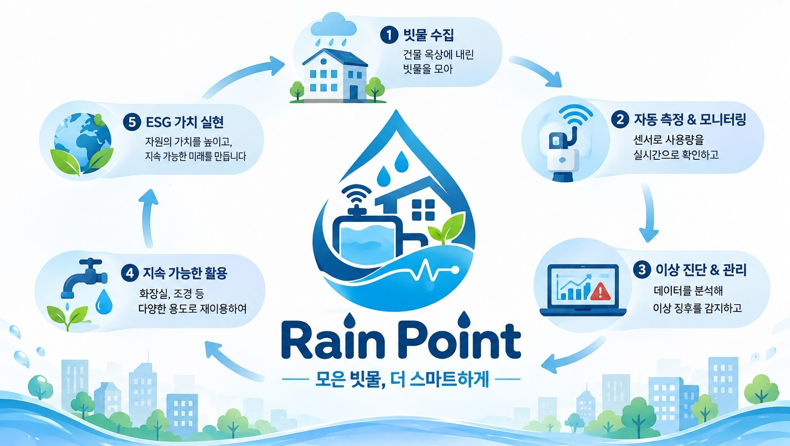

빗물이용시설 사용 실적을
센서로 재고 증명합니다
센서로 자동 기록하고, 이상을 알리고,
법정 기록과 지자체 점검표까지 만들어 드립니다.
제가 알려 드릴게요!

빗물이용시설, 얼마나 쓰는지 센서로 증명합니다
설치는 의무인데 사용 실적은 확인되지 않습니다. Rain Point가 그 빈칸을 채웁니다.
이렇게 작동합니다
핵심 기술과 법 요구사항 자세히 보기
핵심 기술 세 가지
① 자동 계측·법정 기록
사용량·누수·점검·청소 기록을 자동으로 3년 보존합니다.
② 시설별 기준선 이상 진단
"정상이면 이만큼 쓴다"는 기준과 실제 값을 비교합니다(시뮬레이션).
③ 물수지 기반 운영·설계 추천
빗물 유입과 사용 수요를 계산해 저류조 운영을 추천합니다.
법이 요구하는 것과 우리 서비스가 하는 일
관할 시설의 이상 현황을 한눈에 봅니다
시뮬레이션 데이터 · 시설 이름·위치는 가상이상이 의심되는 시설부터 보여 줍니다.
서울 8개 구 빗물이용시설 분포
서울시 공간정보(2022.4) 기준 8개 구 472곳입니다.
동을 선택하세요
지도의 동을 누르면 건축면적, 세대수, 시설 수가 표시됩니다.
구별 시설 수
시설이 많은 동 Top 10
시설 한 곳의 사용량을 기준선과 비교합니다
시뮬레이션 데이터일별 저류조 수위와 강우 (2025.5~10)
월별 상태
알림
월별 사용량: 실제와 기대치 비교 (㎥)
기대치의 83.5% 미만이면 의심, 두 달 연속이면 이상으로 표시합니다.
탐지 성능 자세히 보기
경보 기준별 탐지 성능
기준선이 틀리면 오경보가 얼마나 늘까
실제 사용량이 예상과 다를 때 정상 월의 오경보 비율(경보 기준 5% 고정). 그래서 시범에서 시설별 실측으로 기준선을 보정해야 합니다.
꼭 알아야 할 한계
누수는 사용량만 보면 잘 놓칩니다. 시연의 "누수" 시나리오가 6월에 한 번 의심으로 뜨고 이후 정상 범위로 돌아오는 것도 이 때문에 수위 추이를 함께 봐야 합니다.
사용량 기록을 자동으로 만들고 3년 보존합니다
시뮬레이션 데이터센서 값으로 사용량·누수·점검·청소 기록을 채웁니다.
보존 만료일은 기록일로부터 3년입니다. 이상 의심 열은 해당 월 전체 판정을 표시합니다.
점검표가 묻는 항목을 센서 데이터로 채웁니다
시뮬레이션 데이터자동 확인 항목
자동 유량계 설치 여부: 설치됨 (센서 구성 정보)
자동 사용량 기록 3년 보존 여부: 보존 중 (보존 만료일 관리)
월별 빗물이용량 (㎥)
비 예보에 맞춰 저류조 운영을 판단합니다
예상 유입량과 저류조 여유 용량을 비교합니다.
서울은 비가 여름에 몰립니다
기상청 서울 평년값(1991~2020, 연 1,417.9mm).
시설 → 점검 업체 → 도시로, 3단계로 넓혀 갑니다
① 공공 시설 시범
학교·공공 시설에 센서를 달아 사용량을 자동으로 기록합니다.
② 점검 업체와 함께
점검 용역 업체에 점검표 자동 작성 기능을 제공합니다.
③ 도시로 확장
공동주택과 물순환 모니터링으로 넓혀 갑니다.
빗물 이용 실적을 측정되는 숫자로 보여 줍니다
시설 월간 리포트 샘플
시뮬레이션 데이터
관련 SDGs: 6(깨끗한 물과 위생), 11(지속가능한 도시), 13(기후변화 대응)